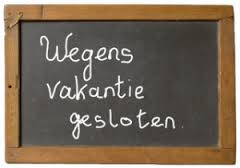
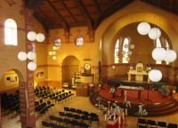

woensdag 12 juli

Zomervakantie
Op woensdag 12 juli sluiten we het seizoen af. We beginnen weer met repeteren op 30 augustus.
zondag 10 september
Korenlint
We doen dit jaar weer mee aan Korenlint in Haarlem. Dit jaar is dat op zaterdag 9 en zondag 10 september.
Koor Kaskedieze zingt op zondag 10 september om 13:40 in Hema "Kelder", Grote Houtstraat 70. En om 15:30 in De Koepel, Koepelplein 1.

zondag 19 november

Magdalenakerk
Op zondag 19 november doen we mee aan een conert in de Magdalenakerk in Wormer. Het concert begint om 14:30 uur.
woensdag 20 december
Kerstconcert
Traditiegetrouw zingen we ons kerstconcert op 20 december in de Nicolaaskerk te Krommenie.